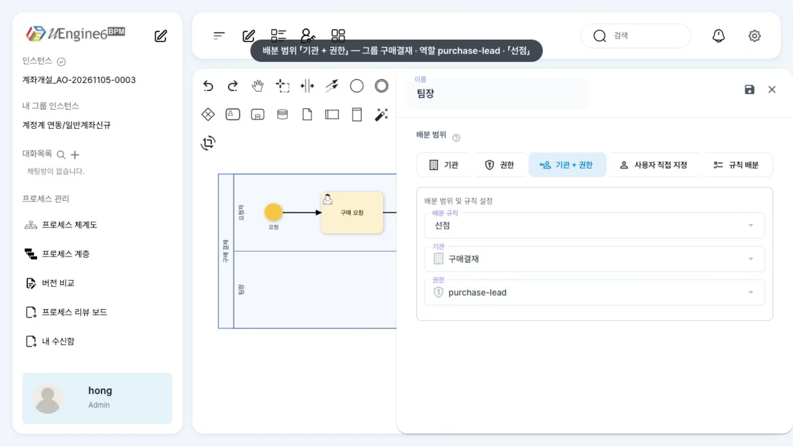
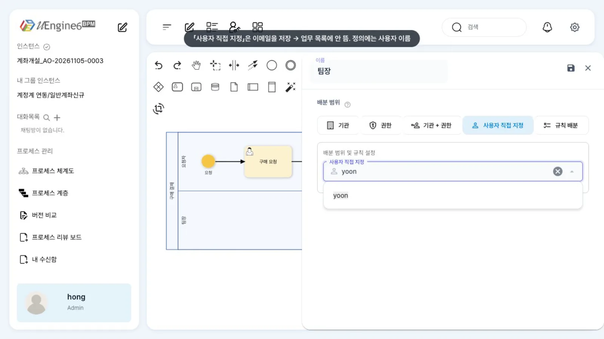
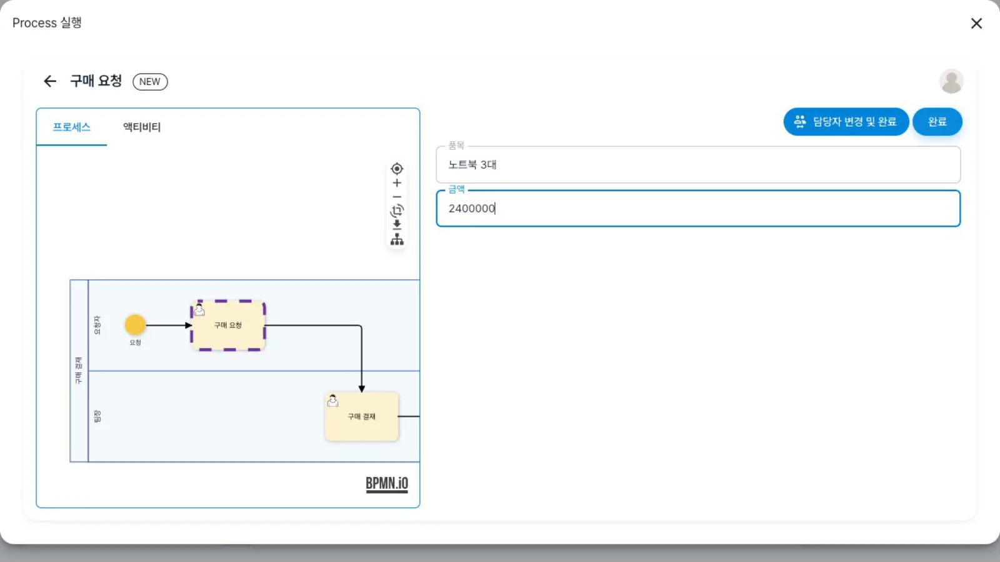
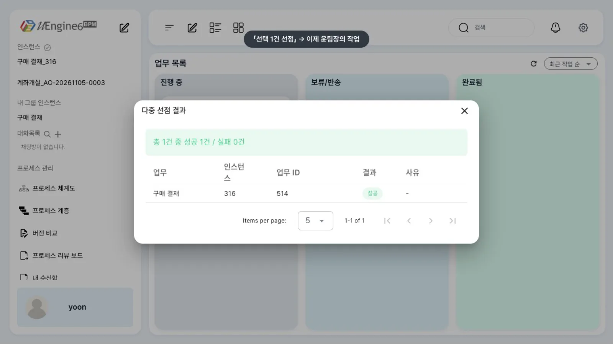
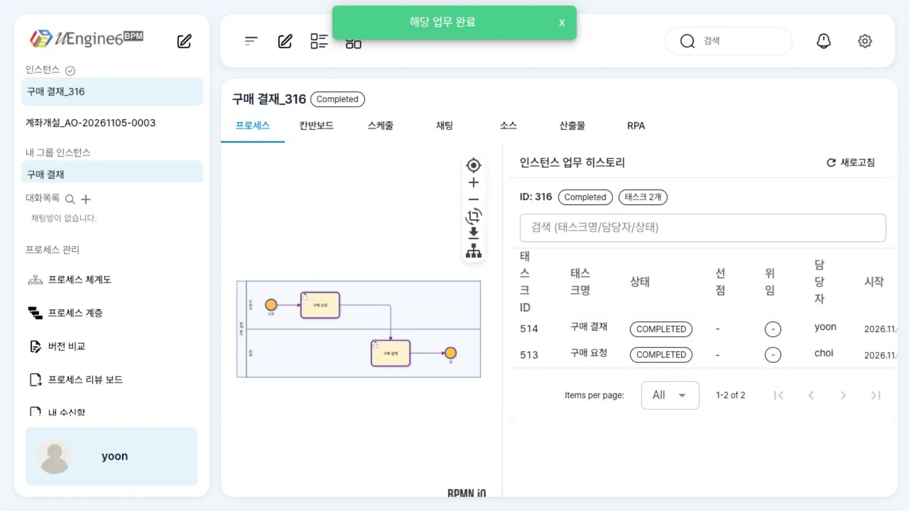

레인 하나는 역할 하나입니다. 레인에 사용자 이름을 적으면 그 사람에게, Keycloak 그룹과 역할을 설정하면 해당하는 사람 모두에게 작업이 배정되고, 선점 방식이면 먼저 가져간 사람이 맡습니다.
무엇을 · 왜#
BPMN의 레인(lane)은 풀(pool)을 가로로 나눈 구역입니다. 표준에서는 「이 구역의 일은 이 부서가 한다」는 도식상의 구분이며,
Camunda는 담당자를 사용자 작업의 assignee·candidateGroups 속성으로 따로 정합니다.
uEngine6에서는 레인이 곧 역할(Role)입니다. 레인 이름이 역할 이름이 되고, 레인 안의 사람 작업은 그 역할을 맡은 사람에게 갑니다.
역할에 실제 담당자를 연결하는 규칙은 레인의 확장 속성 JSON(roleResolutionContext)에 적습니다.
| 방식 | 모델러 「배분 범위」 | roleResolutionContext._type |
핵심 속성 | 작업 생성 방식 | Camunda와 비교 |
|---|---|---|---|---|---|
| 사용자 직접 지정 | 「사용자 직접 지정」 | org.uengine.kernel.DirectRoleResolutionContext |
endpoint = 사용자 이름 |
그 사람 앞으로 | assignee |
| 그룹(기관)·역할(권한) | 「기관」「권한」「기관 + 권한」 | org.uengine.five.overriding.IAMRoleResolutionContext |
groupName, scope |
담당자 없이 그룹 작업으로 | candidateGroups |
| 규칙 배분 | 「규칙 배분」 | org.uengine.hwlife.overriding.RuleBasedRoleResolutionContext |
policyId |
규칙표가 고른 사람 앞으로 | — |
| 정하지 않음 | (설정 없음) | — | — | 시작할 때 넘긴 roleMappings, 없으면 실행한 사람 |
initiator |
그룹 작업을 누가 맡을지는 배분 규칙(dispatchingOption)이 정합니다.
- 선점(
1, racing): 후보 모두의 업무 목록에 보이고, 한 사람이 「선점」하면 그 사람의 작업이 됩니다. 다른 사람의 목록에서는 사라집니다. Camunda의 claim과 같습니다. - 라운드로빈(
2): 후보에게 돌아가며 배정합니다. 이 장에서는 다루지 않습니다.
groupName은 Keycloak 그룹 이름, scope는 Keycloak realm 역할입니다. 가온가전에서는 결재 권한자만 속한 그룹 구매결재와 역할 purchase-lead를 씁니다(윤팀장만 해당).
사용자·그룹·역할을 만드는 법은 사용자·그룹·역할 (Keycloak)에 있습니다.
이 장의 예제
프로세스 튜토리얼/레인/구매결재 — 레인 「요청자」(설정 없음)의 「구매 요청」 → 레인 「팀장」(그룹 구매결재 · 역할 purchase-lead · 선점)의 「구매 결재」.
비교용으로 팀장 레인을 사용자 직접 지정(yoon)으로 바꾼 튜토리얼/레인/구매결재-직접지정도 함께 배포했습니다.
따라 하기#
- 정의 열기. 홍길동(
hong)으로튜토리얼/레인/구매결재를 엽니다. 레인 「요청자」와 「팀장」이 있습니다. 오른쪽 위 연필 아이콘으로 편집 잠금을 겁니다. - 레인 패널 보기. 「팀장」 레인의 왼쪽 띠를 더블클릭합니다. 「배분 범위」는 「기관 + 권한」, 「배분 규칙」은 「선점」, 기관은
구매결재, 권한은purchase-lead로 보입니다.
팀장 레인 패널 - 목록은 고정값. 「기관」 칸의 목록을 펼치면 Keycloak의 가온가전 그룹이 아니라 이 브랜치에 고정된 값만 나옵니다. 그래서 그룹·역할은 아래 「설정 레퍼런스」의 JSON을 정의에 직접 적어 배포합니다.
- 사용자 직접 지정의 함정. 「사용자 직접 지정」을 누르면 Keycloak 사용자 목록이 나옵니다. 여기서 고르면 이메일(
yoon@gaon.example)이 저장되는데, 업무 목록은 사용자 이름(yoon)으로 찾기 때문에 그 작업은 누구의 목록에도 뜨지 않습니다. 패널은 저장하지 않고 닫고, 자물쇠 아이콘(「저장 없이 잠금 해제」)으로 잠금을 풉니다.
사용자 직접 지정 목록 - 요청하기. 최구매(
choi)로 같은 정의를 열고 「실행」을 누릅니다. 「구매 요청」 칸에 품목노트북 3대, 금액2400000을 넣고 「완료」를 누릅니다. 첫 레인 「요청자」에는 설정이 없으므로 실행한 최구매가 요청자가 됩니다.
실행 대화상자 - 최구매에게는 안 보임. 최구매의 업무 목록에는 「구매 결재」가 없습니다. 최구매는
구매결재그룹에 속하지 않기 때문입니다. - 선점. 윤팀장(
yoon)의 업무 목록에는 「구매 결재」가 담당자 없는 그룹 작업으로 있습니다. 카드의 체크 상자를 고르고 「선택 1건 선점」을 누르면 「다중 선점 결과」에 「총 1건 중 성공 1건」이 뜨고, 작업의 담당자가yoon이 됩니다.
그룹 작업 선점 - 완료. 카드를 열어 「결재의견」을 적고 「완료」를 누릅니다. 화면이 인스턴스(
구매 결재_<번호>, 「Completed」)로 넘어가고, 「인스턴스 업무 히스토리」에 「구매 요청」(choi)과 「구매 결재」(yoon)가COMPLETED로 남습니다. 업무 목록에서는 카드가 사라집니다.
완료 뒤 인스턴스 히스토리
설정 레퍼런스#
레인 패널 ↔ JSON#
| 패널 | JSON (<bpmn:lane>의 uengine:properties) |
비고 |
|---|---|---|
| 배분 범위 「기관」 | IAMRoleResolutionContext + groupName |
그룹 전원 |
| 배분 범위 「권한」 | IAMRoleResolutionContext + scope |
이 브랜치에서는 아무에게도 안 보임(알려진 제약) |
| 배분 범위 「기관 + 권한」 | IAMRoleResolutionContext + groupName + scope |
이 장의 방식 |
| 배분 범위 「사용자 직접 지정」 | DirectRoleResolutionContext + endpoint |
사용자 이름을 적을 것 |
| 배분 규칙 「선점」·「라운드로빈」 | dispatchingOption: 1 · 2 |
그룹 방식에서만 |
패널에서 저장하면 위 JSON이 org.uengine.hwlife.overriding.BoundRoleResolutionContext의 base로 한 번 더 감싸여 저장됩니다. 직접 적을 때는 감싸지 않아도 됩니다.
배포한 정의(발췌)#
<bpmn:laneSet id="LaneSet_1">
<bpmn:lane id="Lane_Requester" name="요청자"> <!-- 설정 없음: 실행한 사람 -->
<bpmn:flowNodeRef>StartEvent_1</bpmn:flowNodeRef>
<bpmn:flowNodeRef>Task_Request</bpmn:flowNodeRef>
</bpmn:lane>
<bpmn:lane id="Lane_Lead" name="팀장">
<bpmn:extensionElements>
<uengine:properties json="{"roleResolutionContext":{"_type":"org.uengine.five.overriding.IAMRoleResolutionContext","groupName":"구매결재","scope":"purchase-lead"},"dispatchingOption":1}" />
</bpmn:extensionElements>
<bpmn:flowNodeRef>Task_Approve</bpmn:flowNodeRef>
<bpmn:flowNodeRef>EndEvent_1</bpmn:flowNodeRef>
</bpmn:lane>
</bpmn:laneSet>
JSON만 펼쳐 쓰면 다음과 같습니다. 아래쪽은 사용자 직접 지정 설정입니다.
{"roleResolutionContext": {"_type": "org.uengine.five.overriding.IAMRoleResolutionContext",
"groupName": "구매결재", "scope": "purchase-lead"},
"dispatchingOption": 1}
{"roleResolutionContext": {"_type": "org.uengine.kernel.DirectRoleResolutionContext", "endpoint": "yoon"}}
사람 작업에는 레인 이름을 role로 적어 둡니다({"_type":"org.uengine.kernel.HumanActivity","role":"팀장", …}). 파일로 배포할 때는 definitions/와 archive/<정의>.bpmn/<버전>.bpmn에 같은 파일을 두고 POST /definition-changes로 알립니다(버전과 배포).
API#
# 시작할 때 레인의 사람을 정해 줄 수 있습니다(설정 없는 레인). 값은 사용자 이름입니다.
curl -X POST http://localhost:9294/instance -H "Authorization: Bearer $TOKEN" -H 'Content-Type: application/json' \
-d '{"processDefinitionId":"튜토리얼/레인/구매결재","roleMappings":[{"name":"요청자","endpoints":["choi"]}]}'
# 내 할 일(그룹 작업 포함)
curl http://localhost:9294/worklist/search/findToDo -H "Authorization: Bearer $TOKEN"
업무 목록의 「선택 N건 선점」은 POST /instance/multi-claim을 ESB 봉투 형식으로 호출합니다. (작업 화면의 「선점하기」는 담당자를 이메일로 저장해 작업이 목록에서 사라지므로 쓰지 않습니다 — 업무 목록에서 일하기 알려진 제약.)
{"header": {"emnb": "yoon", "belnOrgnCode": "구매결재"},
"payload": {"dvsnVal": "0", "bswrList": [{"fncgBpmTaskLstId": "<taskId>", "fncgBpmPcesIntcId": "<instId>"}]}}
emnb는 선점하는 사람, belnOrgnCode는 작업의 그룹, dvsnVal은 0 선점 · 1 선점 해제입니다.
알려진 제약#
이 브랜치(bmt/sds-process-test)에서 확인한 것
- 레인 패널의 기관·권한 목록은 Keycloak이 아니라 고정값(
ExternalIAMService)입니다. 가온가전의 그룹은 고를 수 없어 JSON을 직접 적어 배포합니다. - 「사용자 직접 지정」은 이메일을 저장합니다. 업무 목록은 사용자 이름(
preferred_username)으로 찾으므로 작업이 누구에게도 보이지 않습니다.endpoint를 사용자 이름으로 고치세요. - 첫 사람 작업의 레인에 배분 설정이 있으면, 시작하는 사람이 그 설정에 맞아야 합니다(엔진의 시작 권한 검사,
You (…) are not permitted to initiate this process). 이때 화면의 「실행」을 누르면 500 오류가 나고 실행 창에는 회색 뼈대만 보입니다. 요청자 레인은 비워 두세요. 레인 패널을 열고 「저장」만 눌러도 빈 설정이 들어갑니다. - 할 일 목록은 그룹 작업의 역할(
scope)을 보지 않습니다. 그룹만 일치하면 작업이 보이고 선점도 가능합니다. 같은 구매팀의 최구매에게 팀장 결재가 보이지 않도록 결재 레인은 권한자만 속한 그룹(구매결재)으로 설정합니다. - 역할(
scope)만 준 레인의 작업은 아무에게도 보이지 않습니다. 그룹을 함께 주세요. - 「선택 N건 선점」은 원래 이 브랜치에서 모두 실패합니다(
LBM050003). 시연 스택에서는 process-service에esb.inbound-unwrap.enabled: true를 켜고, 프런트가 봉투로 보내도록 수정해 녹화했습니다. 이 엔드포인트는 봉투의emnb를 그대로 신뢰하므로, 운영에서는 게이트웨이나 서버가 토큰의 사용자로 덮어써야 합니다.
확인 문제#
모델러에서 「사용자 직접 지정」으로 윤팀장을 골라 저장했는데 윤팀장의 업무 목록에 작업이 없습니다. 왜 그런가요?
이 화면은 고른 사용자의 이메일(yoon@gaon.example)을 endpoint에 저장합니다. 업무 목록은 사용자 이름(yoon)으로 찾으므로 맞는 작업이 없습니다. 정의의 endpoint를 yoon으로 고쳐 배포하면 보입니다.
결재 레인을 그룹 `구매팀` · 역할 `purchase-lead`로 걸면 최구매에게도 결재가 보이나요?
보입니다. 이 브랜치의 할 일 목록은 그룹 작업의 역할을 보지 않고 그룹만 확인합니다. 최구매도 구매팀에 속하므로 작업이 보이고 선점도 가능합니다. 그래서 예제는 결재 권한자만 속한 그룹 구매결재를 씁니다.
선점 방식의 그룹 작업을 윤팀장이 선점하면 같은 그룹의 다른 사람에게는 어떻게 보이나요?
그 작업의 담당자(endpoint)가 yoon으로 정해져 윤팀장의 작업이 됩니다. 업무 목록은 담당자가 없는 그룹 작업만 그룹 구성원에게 보여 주므로 다른 사람의 목록에서는 사라집니다.